来源：https://zwbfnc29pf1.feishu.cn/docx/FmHpdiE2ooK5kixlEfDc47pPnod
19岁和一百万，这两个词放到一起怎么看都怎么觉得陌生，但是事实上却同时发生在我的身上，大家好我是高尚坏孩，一名十九岁双非大二在读。
从小我就是同学们眼中再普通不过的一个人，在学校哗众取宠，结交狐朋狗友，在家里孝顺父母，小店收摊摆摊。小学3年级的时候就去过网吧，以至于到高中之前我的梦想很简单——18岁成年的时候名正言顺的用自己的身份证去上一次网。
就是这样一个放到人群里都不会有人多看一眼的普通的不能再普通的人，现在手上握着50万流动资金，1年半的时间赚到人生的第一个一百万，我，是如何破局：
（文章涉及到很多故事，如果您忙的话，打开飞书目录，标题前打了✳️的都可以不看）
2003年12月9日，我出生在湖南一个4线城市，不到一岁的时候就被带着到星城长沙生活，父母在一个百货市场里经营者一个小门面。
对，就是你们印象中错落的招牌，满地的垃圾，饭菜门面炒，端着到处吃的普通街头小店，初中前的整个人生都停在这，我在这里生长。
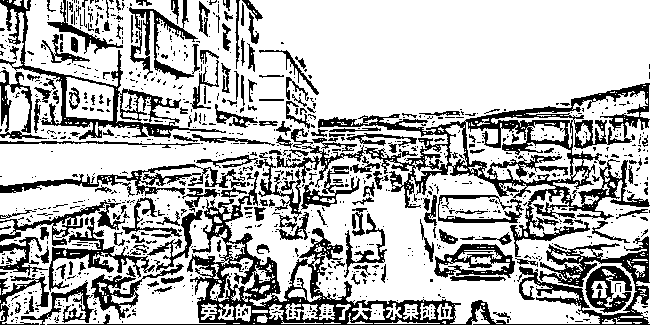
父母是典型的小摊小贩，就是那种开家长会的时候都不想让他们露面的家长，每天说的最多的一句话就是你要好好学习，以后做办公室。
但是就是他们开启了我对商业的第一份认知：“这个是原木的砧板，不开叉，不掉屑的。”“老板诶，120块钱要的了咯。”“120块钱你到哪都买不到这样的砧板。”客户出门3步后“算了算了，收摊生意，120给你。”
小学2年级的时候我迷上了穿越火线，但是上网还不懂去网吧，都是玩投币机，1块钱20分钟。我每次偷偷拿3块钱去上一个小时网，那是我的世界里，第一个精彩。
自此放学后都会在店里帮父母守店子的我，开启了第一次“赚钱”的经历，趁父母不在，偷偷打开收钱的抽屉，拿几块钱，这就是第二天的网费。
小学三年级被人带去网吧上网，玩英雄联盟。那个时候就“赚”的比较多，一次性拿好几十，为了节约时间上网，来回的时候我都是打“摩的”。
小升初考完后，我告诉父亲就选a校（一个满是混子的学校，事实上因为我就读的小学是整个长沙市最差的小学，读书读太早了，然后也没房子，读不到好学校），但是父亲执意帮我报了b校（长沙排名前5的中学），一共就8个名额，报的人17个，我上了。
到学校后我发现好多同学都穿阿迪耐克，戴的手表大多都是卡西欧。而我从小穿的是50元量脚定制的土皮鞋，还带魔术贴的那种。读了三年下来，自卑和虚荣占据的我的生活，父亲开面包车顺路来接我，我假装在上课；穿了一年特步七波辉后，同样的价格，我选择买莆田阿迪；
我喜欢过好几个女生，他们是那样明媚，让我从小就知道一个道理，女孩子要富养。那个时候我就想着，我的女儿以后要是也这么优秀多好，但当时的我自卑的觉得不一定会有女儿。
小升初那个暑假，父亲把我送到一个初中预科补习班学习。当时和我一起学习的人他的父亲是小学校长，他好有钱，课间的时候就拿一台苹果手机刷b站英文搞笑视频，而我拿着一台vivox5我记得很清楚。
那是我求了好久求到的，也是安卓最新款，但就是怎么都感觉比不上别人，殊不知也是父亲下了狠心买的，他玩的是任天堂游戏机。英语补课的时候他的基础真的很好，而我什么也不会。
遇到了我喜欢的女生后，我决定学吉他，学了一年多后考了一张吉他4级证书，还发QQ空间炫耀过，但是现在想过来，当时好多同学都考过钢琴8级，学过小提琴萨克斯等。
而我的四级实际上考的是童年“池塘边 榕树下 知了声声叫夏天”初中的生活充满了虚幻，发的朋友圈我都不知道哪一句说了真话
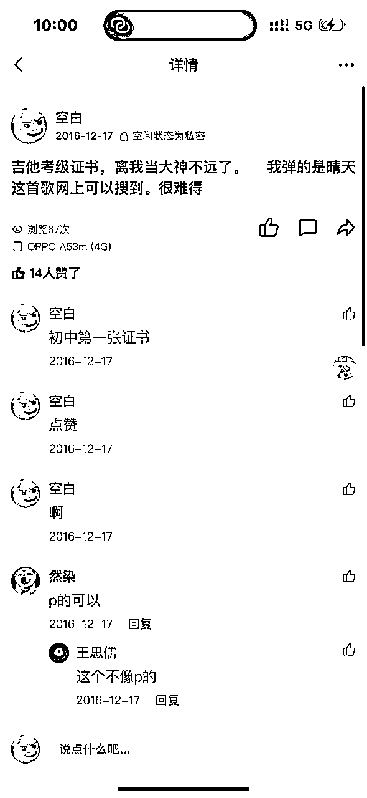
初三的时候学习成绩太差，但是当时已经懂事了，想要努力，看到学校外有一个很出名的补习机构，让父母送我去读书，一节课460元。
父母一次性交了5万多的学费，还只是周末去补课，每次补课的时候都能看到很多在补习机构全日制的学生，一天6节课，为什么，他们父母赚钱这么容易，而我爸妈送我来补课，还要节衣缩食。我心疼父母的努力，又难过自己的无能。
（初中的故事就略写这一点，太偏题不好，如果喜欢听故事的人多的话，我单独写一本短篇小说）
初中补习了一年，最后中考发挥失常，最后只能去当地的职高读书，这个时候我已经回归正途，放下了虚荣心，努力学习，提升自己，虽然学业很重（读的是职高里的对口高考班，可以参加专业高考，最后可以考有本专业的几所本科院校）。
但是高中三年确实是我的黄金三年，沉闷的时光里我爱上了写诗，但是事实上，我根本没有什么文字功底，也从来没有学习过，写的这些诗充满了矫情和华丽的文字堆砌。但是他丰盈了我的人生。当你的生活好了一个点的时候，线和面就快来了。爱上读书，写文字后的我懂了很多道理，人也变得自律了很多。
高中的时候有个习惯喜欢记录自己的各种创意，拍抖音的各种段子，点子，写的歌，诗文等等记了满满几大本。
这个方法其实我很喜欢，它陪伴了我走过高中的时候很多迷茫的时刻，我心里总有一把钥匙时刻提醒自己上大学后多么多么美好。我做好了充足的准备。
下面给几张图（写的东西可能看来毫无厘头，但是我看来都是成长的哼唧，思想的痕迹）
下面是写的做个人ip的某个口播内容（高三）
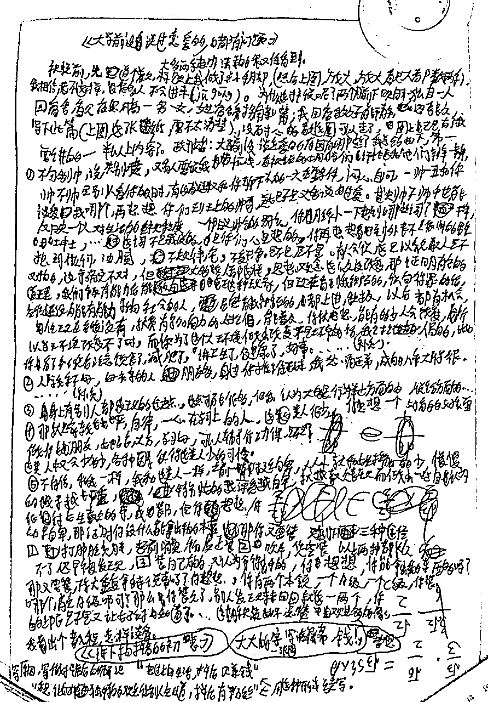
下面是我写的现代诗（高二）
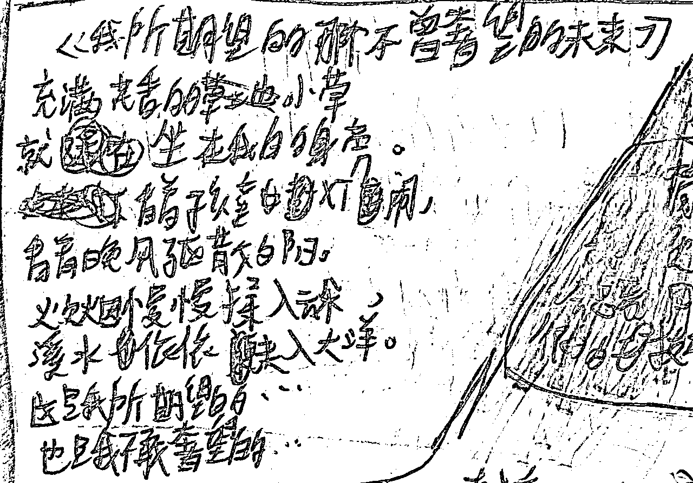
下面是我写的随笔（高二）
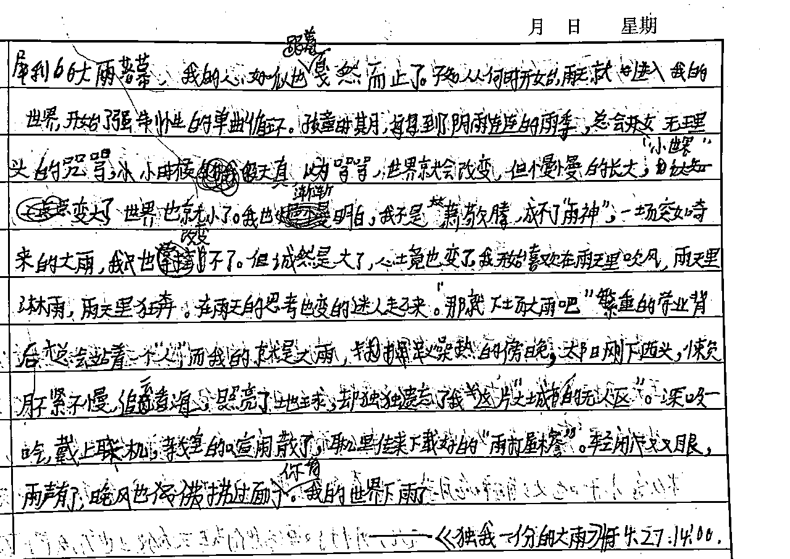
下面是我高二写的小说剧情（玄幻小说系列，写过好多本）
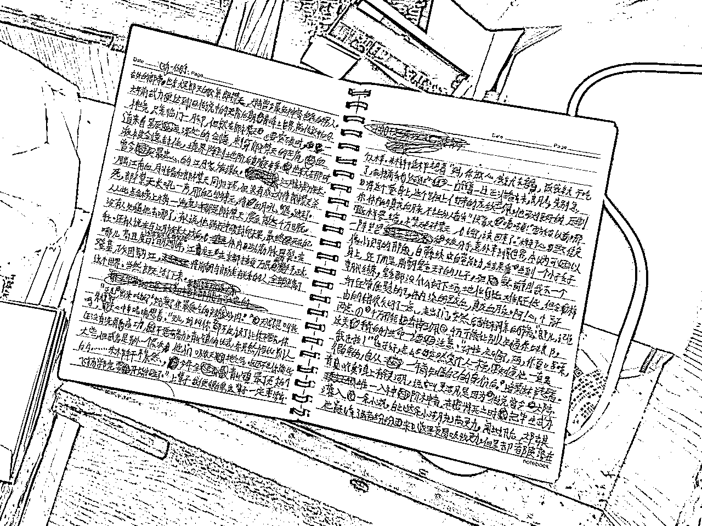
下面是我写的歌词（高二，丢人。。）
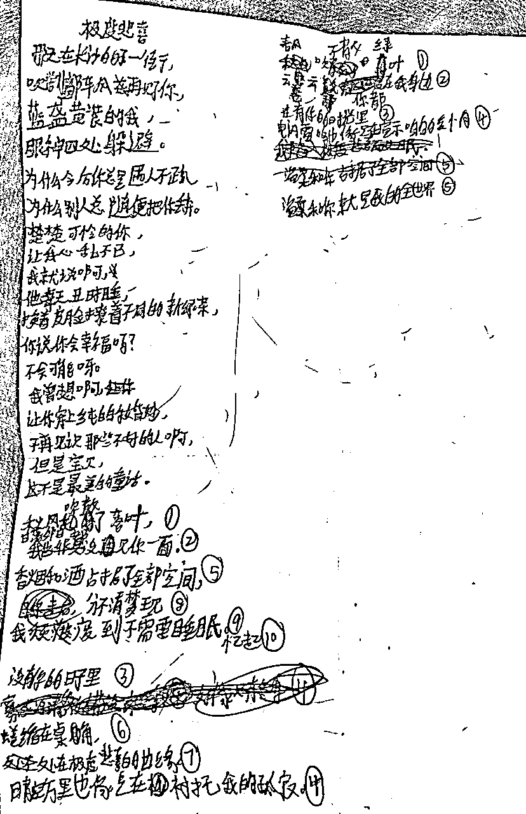
下面是我写的创业点子（高一，好傻）
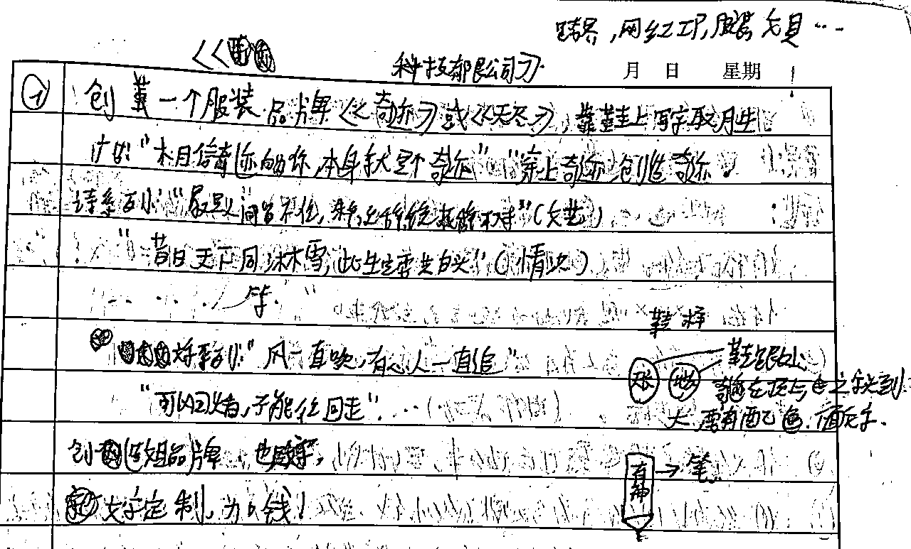
下面是大学写的情书💌
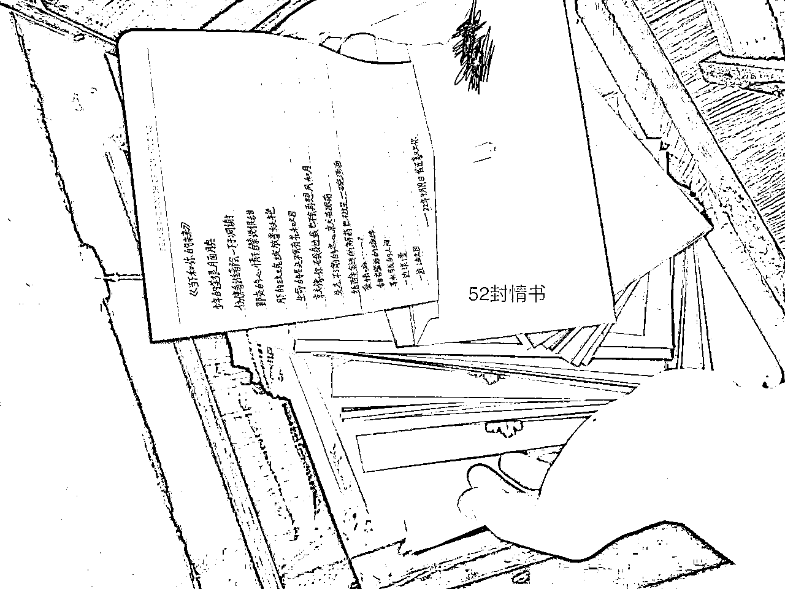
高二的时候，具体时间忘了，那一年游戏防沉迷系统让大多朋友都玩不了游戏，我当时也喜欢在网上扩列，并且开了一个代刷网卖QQ群机器人的授权和给人刷赞刷各种东西。
在别人那38元学会了如何破防沉迷系统（钻了个小漏洞）。58-188的价位，给30到50人解除了防沉迷系统，那是我第一次赚到人生的4位数。（没图了，朋友圈删过）
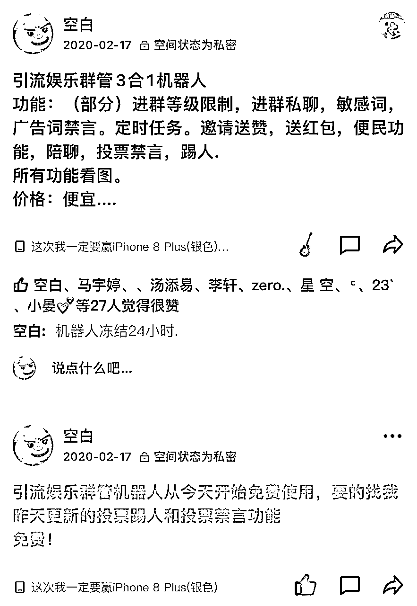
高二的时候我遇到人生中的一位贵人，他是我的同学小李，是他带我了解到樊登读书会，自此我便“一发不可收拾”一有空就听书，带着耳机。
一年时间，基本听完了2013-2020年的所有内容（不好意思樊登老师，这个时期听的都是你的盗版）其中对我影响最大的两本书就是《终身学习》和《百岁人生》这两本书真的特别好，建议没有看过的朋友买回来看一看。到现在23年了每当我思想滑坡的时候，还是会拿出来听一听。
（我）
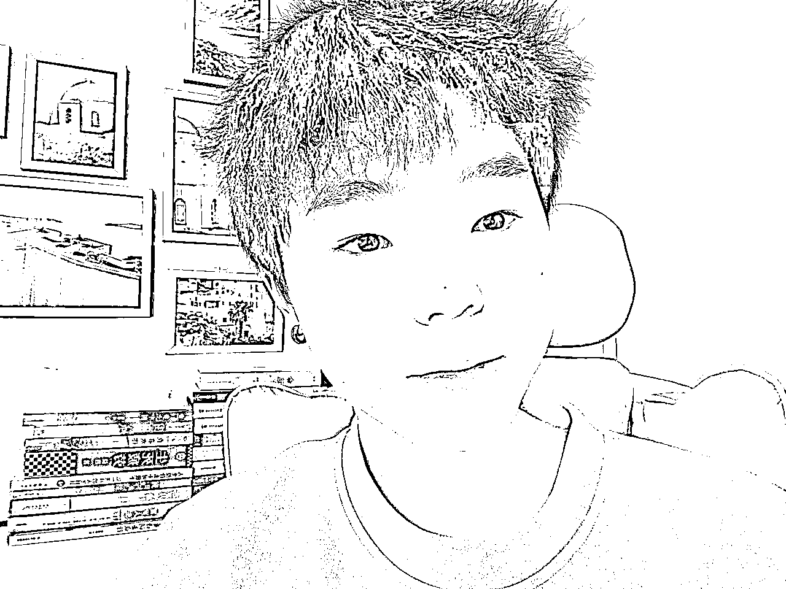
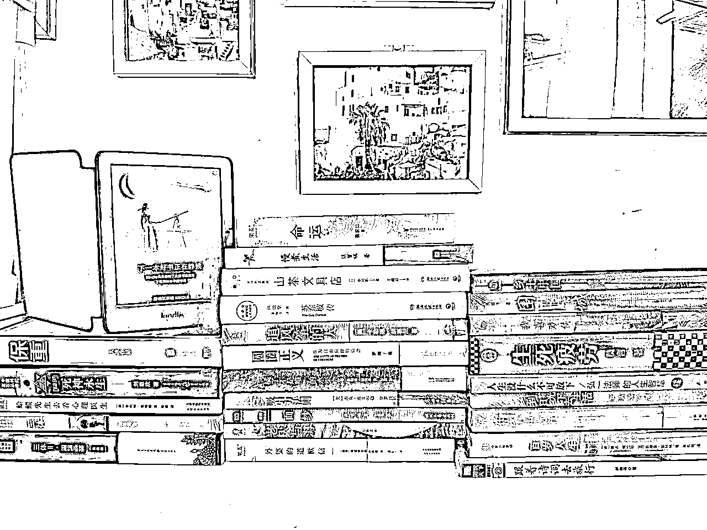
（什么书都看，比较喜欢有故事的）
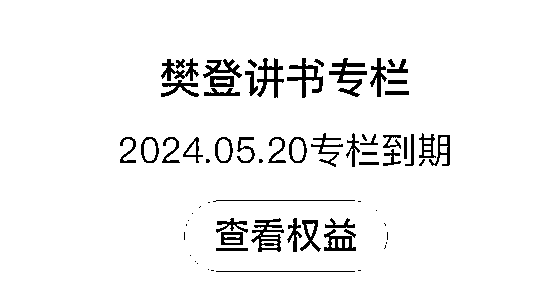
高中我以比较优异的成绩考上了一所2本，（初中造的孽，对口升学的学校上限太低）。但是正是一所二本让我懂得了很多规矩，制度和道理。
高中那个暑假，我没有像别的准大学生一样出去考驾照，我是在家里研究做抖音，首先拍过一段时间的搞笑段子，但是观众不买账，可能是我一个人的觉得好笑。
后续又想做个人ip，拍过一段时间的观点输出号，但由于画质感人，形象邋遢，观点过于黑暗等各种原因，封号了。暑假3个月的时间，已经过半。而我，一事无成。
可以想象花了整个高中整理的手写文字，到了抖音上一个都行不通，那是少年的自尊心被时代碾压的感觉
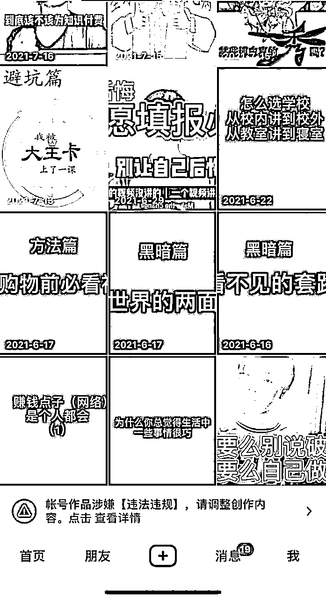
别折腾了，还是先挣点钱吧，理想主义吃不饱饭
个人出镜我完全不行 ps 那还有什么是适合我这样的一没家境，二没人脉的准大学生能够做的呢，我无所事事的刷着抖音，突然刷到一个叫做“白嫖的知识”的账号，画风简单，知识全网抄，不用真人出镜！
我看到了曙光，马上开始。刚开始做的时候十几个视频数据很差，，一度想要放弃突然爆了一个9万播放的视频，曙光来临，接下来每一个作品没有低于5千播放的。我在家反正也没事做，一天天边听小说（这个方法我觉得很推荐大家去用，就是听小说，比起看小说来说的话，听小说更加有真实感，而且不需要用到眼睛，耳朵这个器官就能实现娱乐属性。
在做一些不怎么需要费脑子的重复工作的时候可以放松心情，甚至提高效率，对我来说是这样的）边疯狂剪视频。突然有一天爆了一个接近600万播放的视频，那是一次世界观的刷新。
我10辈子可能都不能认识600万人，而一个我花20分钟剪的视频却让600万人为我停留了半分钟。一个干货小知识让600万人以后在做那件事的时候不会再吃亏。我发起的话题让几千万人看见过。天呐！
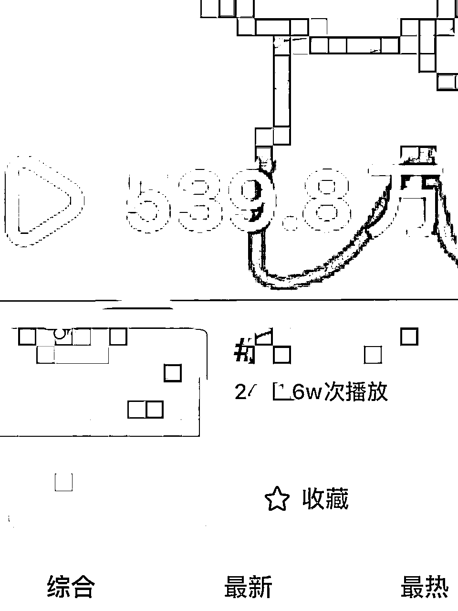
说的矫情点，我找到了自己的价值，让我明白了互联网的魅力，这是一个值得我花10年时间，甚至更久去钻研的东西。
我迅速抓住这波流量，在主页留下了联系方式，培训学员，188-388之间招了好几十个人。
但是，这还不够。
几十位学员里，有很多赚到钱的，也有没赚到钱的，但是有一位问问题问的特别勤，他不是像别人一样问这个怎么剪，这个话题带什么标签，而是更像在摸索这整套模式。我觉得他可能是同行。
但是后续发现，他是一名旅游服装连锁店的老板（森萃），身价千万以上。在全国有15家旅游服装门店，做的是小众设计师品牌。他和我聊天过程中和我透露了很多，疫情让门店亏损严重，和妻子离婚，带着两个孩子，还想要在互联网上创业。后来约了线下见面，那是我第一次坐宝马，不怕大家笑话。
我们彻夜长谈，从赚钱聊到人生，真的给我指点了很多很多的方向。心心相惜。达成合作，我在学校招人剪辑，他要批量做账号，我做监督，算是中间商。那一段时间我在学校招了差不多20人，组成了一个剪视频团队。每个月让我能有差不多1万元的利润。
剪视频赚钱只持续了几个月，最后就不了了之，因为没有盈利点。而且当时市场已经很卷了。但是事业的第二春来了，当时开了个拼多多和淘宝店帮人设计小人，当时这个市场是蓝海，但是我规模太小了。
帮人设置一张图是60，用剪映做一个开口闭口的动图就是180元。但是我没有稳定的设计师团队，开始在拼多多找人设计，后来拼多多的人嫌我给的钱少，事儿也多就不合作了。
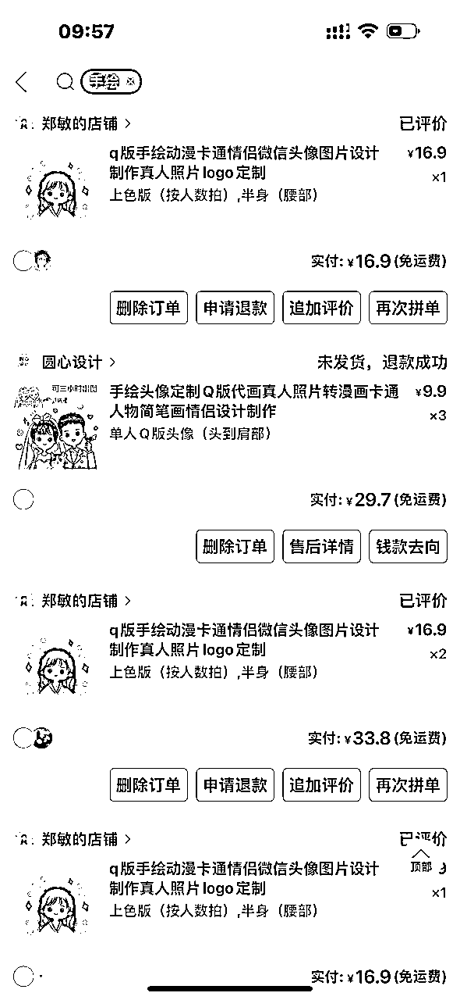
在学校招了几个设计学院的学姐帮我做设计，一张图给人15-20这样子，从中赚差价。最后也就是一个月赚小一万这样子。21年刚开学的那个时候我就每个月可以赚小2万元钱了，那也是我身材管理最好的时候，如图
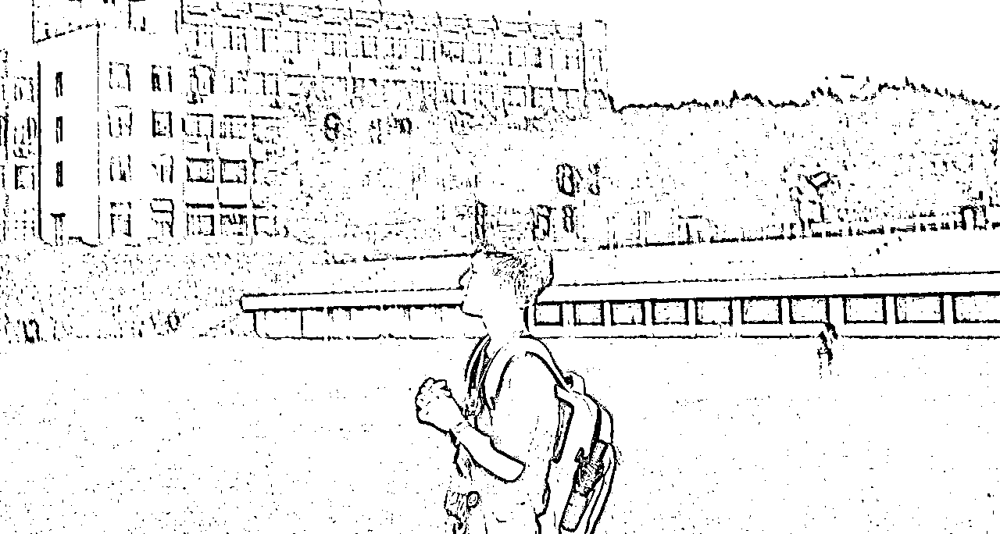
后来我接触到了在拼多多开店，在剪视频业务崩盘后，我将全部精力放到了拼多多开店上，无货源的小玩具店让我深深的知道了“仅退款”的威力。终于坚持2个月左右，我坚持不住了，关掉了店铺，这个时候因为做无货源去了，设计图片这一块业务有所忽略，我也不会投流，都是瞎摸索，同行一来，我就没了客户，自此我没有了收入。
开拼多多这群人到底是谁在挣钱？
我整夜整夜的睡不着觉，一直在思考这个问题，那个时候我也佩服自己，轴的很，也没想过去做其他平台。后来终于摸索了一套可行的方案，顺着仅退款的角度去想，退款就要亏钱，那有没有办法退款不亏钱的呢？答案是有的。
这也是我人生第一个1百万的来源，拼多多虚拟电商。从一开始的1家店，单日巅峰破了2000，到9家店归于平静，总收入日1000-2000。（这一篇是成长分享的主题，我就不赘述拼多多电商的玩法，咱们平台很多大佬都有分享，而且我现在也没有做拼多多电商了）
23年6月2号的时候彻底放弃了拼多多虚拟电商项目，下面是当时写的一段文案，放弃的原因有很多，最直接的原因就是导流导致店铺限级和品类同行的入侵。
9家店，有5家提示导流，要手写保证书啥的，还要从1000的保证金补缴到5万1.如果要继续运营下去，保证金就要交25万，剩下的几家店也都有引流，不知道什么时候还要交。并且同时在做的淘宝一家用来打算开拓淘宝市场的实验店，接到了售假违规。
大家都知道，淘宝对于虚拟类售假管的很严格，费劲心思选的品接到了举报。标志着我终究还是踩到了虚拟最大的坑，版权和售假问题。哪怕我一而再再二三的筛选，还是没有办法全部规避。自此我人生中做的最长的项目拼多多虚拟标志倒闭。
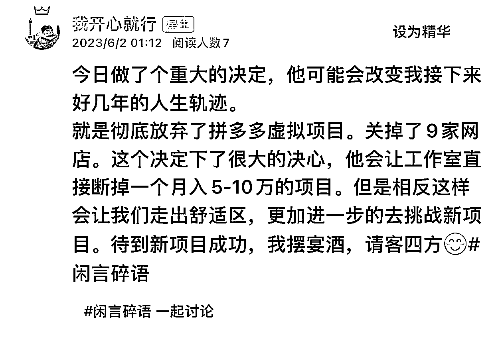
这一路走来真的很累，但是正如我工作室里的伙伴的一句话，如果每天能够看到钱，每回复一个客户就有可能促进一单的成交，那谁都愿意去忙。
但是生活之所以是生活，就是他没有确定性，做项目更是如此，辛苦做的小红书无货源，做小一个月没出单等等等等，酸甜苦辣都要自己争取。
如果你一味追求稳定，那大可去上班，朝九晚五。但是在圈子里的人都是不甘于人后，人活一世，凭啥我要比你差？我才不到20岁？凭啥就要否定自己一生的可能？之前有个话题很火，赚钱重要还是旅游重要？
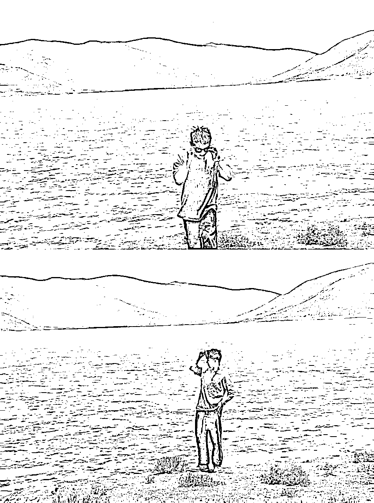
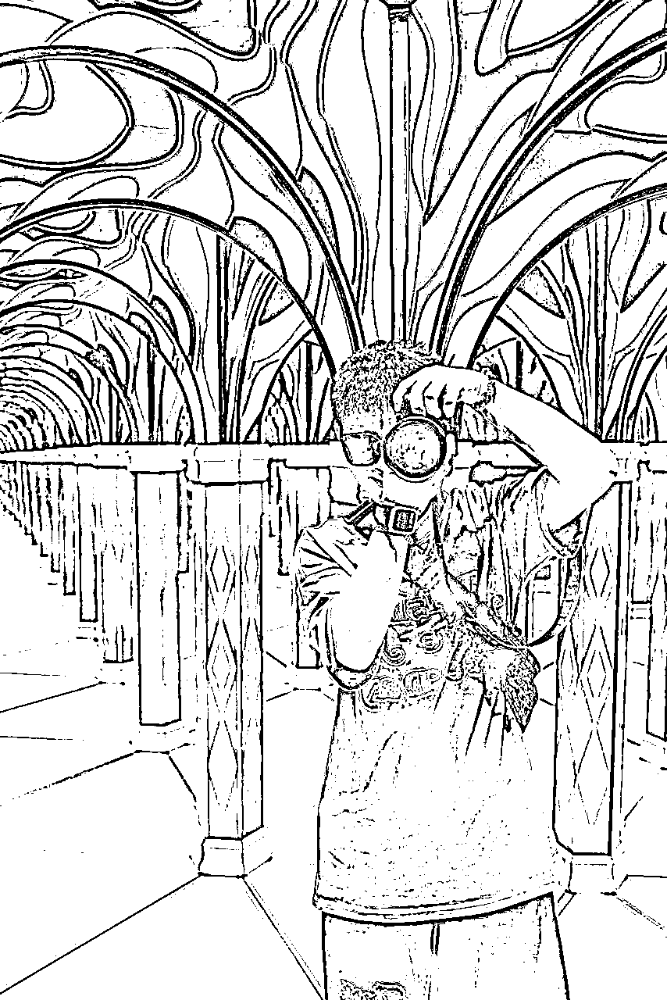
高尚坏孩用实际经历告诉你，赚到钱了就可以旅游了，现在很流行超级个体的说法，认真了解后发现真的有人可以做到钱一边赚，人一边玩。
大学2年时间，同年龄的同学还在忙着纠结那个女生爱不爱自己，纠结马上要期末考试了。每日碌碌无为，无所事事的时候，我已经花大学两年的时间，去了20个城市（均为呆了一天以上时间，路过的地方均没点亮）。
目前工作室主要的项目就是在做小红书电商（师从行医老师），但是我个人还是想要再开展抖音业务，打造个人ip，其实去年中旬的时候就重新做了一下，也陆续给好几位抖音老师交过学费。但是当时很忙就没怎么坚持，现在没那么忙了，我再摸索一下。还是想要继续。
帮助过自己的人一定要感恩，我始终相信因果循环和“缘”这个字。前文提到的贵人，现在还偶尔有联系，他现在正在筹备一个餐饮品牌，毕竟几十年的生意场沉浮，体量和格局也不是我能比的。我只能不断提升自己，希望以后能够报答这份恩情。
我们总会有很多时候迷茫，那种感觉我太懂了，特别是大学生，一到晚上就开e（emo），不知道的以为你要开奔驰e......没有方向时正是最应该警惕的时候，不要让兽性和下意识主导你的认知，掌控你人生大航海的船舵。
一个点好了，线和面马上就来了。我也始终相信气运这个东西。比如你先开始健身，身体好了，人变好看了，你的自信就上来了，那个时候你可能就会想我都这么好看了，我要是再多看点书，那岂不是更？
这里说的规则不是法律的那个规则，法律必须人人遵守，这是底线 ，说的是各种世俗的眼光和各种条条框框，我打个比方吧。可能我说的东西都比较抽象，但是他们真的成就了我很多很多。
比方开始：你是一名快要高考的高中生，如果你上课迟到那么你就会要被罚抄学生手册一遍，但是这个时候你学习时间宝贵哪有时间去罚抄这些东西。好的，你迟到了，走在去教室的路上，看到有学生会的人在查迟到，如果你遵守这些规矩，那么你就直接走过去，然后被记名字，被罚抄一上午的手册，错过几节复习课。
但是如果是我，我会拿起路边的一个垃圾桶的盖子，然后装作很累的样子，拿着盖子往教学楼飞奔，被学生会的拦住了，我就开始编“你好，我倒完垃圾，上课的时候突然想起垃圾桶的盖子倒垃圾的时候忘记拿了，我刚刚跑出来拿盖子。”
然后就进教室上课了，一点事没有，下课的时候过来把盖子放回垃圾桶上就行。或者我知道下一节课是数学课，老师要讲练习册，我又开始编“你好，数学老师让我下来拿练习册，但我找不到，我再回去问一下老师”
以上两个比方都是我自己高中的时候经常用的。在你已知规矩对你会造成不好的损失之后，你就要学会去破局了。
我建立了个星球每日记录自己的得失。
最大的项目倒闭后，现在每天翻圈子，翻项目，很多时候就会轴住，一直一直看，不敢有休息，我突然的醒悟发现，我自认为还有一点成绩我都这么焦虑。
何况还在读书的大学生，和很多本身就有车贷房贷压力的朋友，我不敢想。压力要有，但是一定也要学会往下看看，看看你也一路走来走了那么长的路了。
你会成功的，哪怕大器晚成
这个乱花钱的概念又有点抽象，还是举个例子吧。
我很喜欢玩一款叫做王者荣耀的游戏，它是一个日活好几个亿的社交游戏。他也是一个展示面，我刚好也喜欢玩，所以我冲了3万多，现在是贵族10。
每次累的时候打一把游戏，看见皮肤随便挑，队友都在发“大佬666，我擦有钱”的时候你心里是会有满足感的。很多人王者荣耀打了上万把（很正常，我其实玩的时间不是很多，但是从初中积累到现在也打了7千多把），算一局20分钟，假设你打了一万把王者，那么你就是打了416个8小时工作日，你花了多少时间，失去了多少正向的反馈。（前提是你首先要不缺这些钱，你才去充值哈，这个度大家自己把握一下）
其实很多人的思想还是觉得财不漏白，但我个人认为在这个互联网时代，赚到了钱反而要炫，微商炫奥迪，炫着炫着买上了布加迪；老师炫收入，炫着炫着跟着学项目的学员越来越多。炫耀其实能解决很多问题。
还有炫耀能让人更自信，正向反馈。这里其实和第二点有点像，我刚赚钱的时候我没有想过后面会赚的更多，但是我知道穿的好一点会让我更自信，所以大一那会儿买了不少名牌，买了后赚不到钱了，反而促使着我更想要努力，更求着找出路。赚到钱不花，久而久之你的不到正向的反馈，慢慢的会怠惰。
这一点其实我是最有感悟的，很多人就是有误区，什么都能花钱，但是为了服务不能花钱，很可笑。0元买到的知识不叫知识，那叫资料。一说到要交学费就想的是他想要赚我的钱，这种人的价值观里没有双赢这个概念。还容易走上盗版的道路。
具象点来说就是不要问在吗？不论是做电商还是做私域，我最讨厌的就是一句在吗？然后不说任何话，一般来说我咨询别人都会说清楚事情，互联网时代下，时间就是金钱，浪费他人时间，小学课本教过的那叫谋财害命。
最后为什么要叫高尚坏孩：其实从我上面输出的内容应该也能抽象的感觉出一点，那就是做一个大事儿上品德高尚，但是要敢于打破世俗观念，敢于破局的“坏孩子”。
祝看到文章的所有人23年暴富！